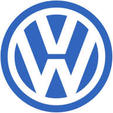
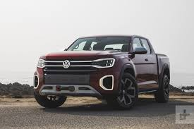

大众汽车（德语：Volkswagen，缩写VW），是一家总部位于德国沃尔夫斯堡的汽车制造公司，为大众集团的核心企业及原始品牌，也是该集团最畅销品牌及全球第一大汽车制造商[3]。在德语中，Volks为人民之意，Wagen为汽车之意，因此，其全名之意即是“人民的汽车”。
历史
932年–1938年 大众汽车项目
1936年，在纳粹政府官方工会德意志劳工阵线的支持下，大众汽车成立。1937年3月28日，“Gesellschaft zur Vorbereitung des Deutschen Volkswagens mbH”公司宣告成立，随后于1938年9月16日更名为“Volkswagenwerk GmbH”。1938年早些时候，在今天的沃尔夫斯堡，大众汽车公司开始建厂，用以生产由费迪南·保时捷设计的新款车型：甲壳虫。 虽然大众汽车公司的起源于1930年代，但由汽车设计师费迪南·保时捷设计的甲壳虫（Beetle）则可以追溯至更早。当时汽车为奢侈品，德国民众主要的交通工具是摩托车和单车。阿道夫·希特勒希望每一个人都买得起像这样的一台车。不过其大部分的设计改良自汉斯·雷德温卡（Hans Ledwinka）所生产的塔特拉（Tatra）车型。 虽然希特勒对于汽车有强烈的热情，但是却不甚了解相关的技术细节（同时他也不会开车），于是他命令保时捷修改原本的设计，使其能提升燃油效益至让工人阶级都能负担得起、增加稳定性、使用方式也必须更简单，并且维修成本与零件价格必须要低。这项计划的动机是让德国人借由储蓄就可购买车辆（当时的口号是“Fünf Mark die Woche mußt Du sparen, willst Du im eigenen Wagen fahren”，意为“如果你想买台车，那就每星期存5马克吧。”），估计最后约会有33万6千人进行储蓄计划。在第二次世界大战后，大众汽车公司因为其对储蓄计划的帮助而获得表扬，而有类似储蓄计划系统“coupon”的美国福特公司（Ford）则没有成功。大众汽车公司最早的成品在斯图加特制造，车型名为“力量来自欢乐”（德语：Kraft durch Freude，时德国官方休闲组织名），在1938年登场。这台车已经有独特的圆滑造型、空调系统、水平对卧四汽缸（等于夹角180度的V 型发动机，此设计可减少震动）、后承载式发动机等与塔特拉（Tatra）相近的特色。福汽车公司的汽车只是众多KdF计划的其中一部分。 保时捷的主要设计师厄尔文·柯曼达（Erwin Komenda）研发出了车身的原型，也就是今日广受人知的大众汽车公司的甲壳虫汽车（Beetle）。这是最早进行风洞（wind tunnel）测试的车型之一，与克莱斯勒“Airflow”车型不同，这是一个成功的车款。 为了容纳更多工人，大众汽车在沃尔夫斯堡（又称“狼堡”，Wolfsburg）建造了新工厂，但是仅在战争开始时的1939年制造手工车辆。最后没有一台车真的被送到存到钱的车主手中，除了其中一台“Type 1 Cabriolet”于1938年被当成希特勒50岁的生日礼物送出。 由于战争策略的关系，车辆的制造被转移至军事用途，包括“Type 81 Kübelwagen”车款（战时大众汽车公司的最普遍的车型）和两栖车辆“Schwimmwagen”。
1945年–1949年 英国政府托管
二战后一位英国少校Ivan Hirst被指派去重整大众汽车让其重新运作，而他也成功让大众汽车恢复大量生产。大众汽车公司的第一代甲壳虫汽车在没有大量改变外型与机械的情况下连续生产数十年，2003年停产时共生产约2153万辆，成为世界纪录上第三畅销的汽车。
1950年–1972年 销售全球 快速扩张
第一家海外销售分公司“VW Canada Ltd.”（大众加拿大有限公司）于1952年成立。1955-57年，大众汽车进入大中华市场，其中1957年首批汽车于香港发售。
1973年–1980年 新车型 新世代
于1973年推出帕萨特车型，接着于1974年推出的Golf车型，成功接替Beetle成为大众汽车公司品牌中最畅销的车型。
1981年–1991年 新市场 新品牌
1983年4月11日于上海嘉定区安亭镇，随着首部桑塔纳成功组装下线，并于1985年正式成立上海大众合资公司，大众汽车正式进入中国市场。
1991年–2014年 全球化 多品牌
大众汽车在20世纪的车型风格通常较为俭朴保守，车身与机械强调耐用、安全、高速稳定性，1990年代大众汽车也发展少见的W型发动机，W形12气缸发动机将小夹角V6发动机的活塞交错排列，发动机剖面看似如W形，有V型发动机的动力和低震动但体积又明显缩小。此外大众汽车研发的VR6发动机和VR5发动机，将直列六缸发动机和直列五缸发动机的汽缸向两旁以小角度交错倾斜，形成类似V型发动机的构造，却又如直列发动机可共用一个汽缸头和汽门机构降低价格，其中VR5的V型五汽缸发动机则是大众汽车所独创。1988年大众汽车建立汽车业第一个大量使用全车钢板镀锌的生产线，1990年代后期，原厂提供长达12年的防锈保证，还有优于同级车的车尾拖曳能力展现优良机械强度，以及可增加车身强度的焊接专利技术，集团旗下的基本车款如1999年的斯柯达 Fabia也采用新式电子液压辅助（Electro-hydraulic）方向盘的高等配备，由CAN-bus连结到发动机电脑来决定辅助力量，并有省油的优点；通用汽车的工程师也发现如大众汽车的捷达有较同级车优良的避震性是因为采用较同级车昂贵的底盘悬挂系统零组件（Car and driver, US edition, July 2004）。 大众汽车的Golf 是继甲壳虫汽车之后大众汽车的主力车种，通常也是欧洲最畅销的汽车，虽然该车能以一轮腾空用三轮快速开过弯道，但为了回应福特Focus新式底盘操控普受好评的竞争，2003年新款新Golf已改用四轮独立悬挂系统增强稳定性。Type 2则是广受好评的多用途小巴士，可算是今日MPV（Multi-Purpose Vehicle 多功能车）或Minivan（轿车式小箱型车）的先驱。大众汽车的帕萨特则以较大车身与宝马 3系列、奔驰C-class、福特Mondeo等竞争经理座车市场。大众汽车公司的大型轿车Phaeton则与Audi A8共用许多机械竞争企业主座车市场，推出后被当时的德国总理施若德选为总理座车。2009年5月7日，在经过长达4年之久的收购大战之后，保时捷和大众汽车公司的控股家族达成了初步协议。这两家公司将合二为一，打造出一家拥有10大品牌的欧洲最大汽车制造商。 2009年12月10日根据协议，铃木株式会社将以2061日元/股的价格出售1.0795亿股铃木股票给大众汽车集团。这样，大众汽车集团将获得铃木株式会社19.9%的股份。因需相关当局的批准，预计这笔交易将在2010年1月份完成。届时，铃木株式会社将获得2224.8亿日元（约合25亿美元）的资金。铃木也将以最高一千亿日圆取得大众约2.5％股份。而后2009年底德国大众汽车集团入股铃木汽车19.9%的股份并合作结盟，也成为奥迪大众集团旗下品牌之一，而铃木并协助大众加强在印度和东南亚地区长期销售不佳的销售量作改善及取得铃木汽车自家 TECT Technology 全方位车体安全结构专利技术运用于奥迪大众集团旗下品牌车款，而奥迪大众集团也以自身发动机优势技术协助铃木开发新世代汽油、柴油涡轮增压发动机和电动车，而非采用与奥迪大众集团旗下相同体系的发动机，然而可惜的是两家汽车集团的企业文化很快就出现了分歧。Suzuki汽车认为Volkswagen汽车手中持有不愿与其共享的部分技术，并认为这严重违反了两造双方的合作协议， 因此 Suzuki 于2011年9月要求取消合作，但Volkswagen方面并不愿意出售股票，迫使Suzuki汽车于2011年11月向英国伦敦的国际仲裁法院申请仲裁请求取消双方的合作关系，最后伦敦国际仲裁法院同意两家汽车制造商的合作关系已于2012年5月结束，并且Suzuki汽车要买回Volkswagen汽车手中所持有的Suzuki汽车股权，股份的价格总价约4600亿日圆(约新台币1243亿元)。 2012年7月5日，大众汽车（Volkswagen）已就收购保时捷控股（Porsche Automobil Holding）旗下跑车业务保时捷车厂余下未持有的股份达成协议，为持续近三年的收购过程划上句号。大众汽车将以44.6亿欧元（约436亿港元）收购尚未持有的50.1%保时捷车厂股份，私有化该家车厂
争议事件
速腾断轴门
2012年3月，一汽大众为了节省成本，将速腾（Sagitar）的悬架从2006款开始就已搭载的多连杆式独立悬架缩水为创新耦合杆式悬架，这一技术上的倒退引得媒体和车主一片哗然。[4]但对于许多消费者来说，他们对于汽车的技术与参数并不了解，并且由于大众汽车较早进入中国市场，被广泛用作公务车和出租车，因此很多上了年纪的中老年民众对于大众的品牌有种盲目的信赖。 到了2014年上半年，因累积了海量速腾悬架断裂的案例，使得车主开始质疑是由于简配后的非独立悬架与PQ35平台并不匹配，导致结构以及材料的刚性存在缺陷。市场上传言不断，而直到新出厂车更改回旧设计，才引发车主集体诉讼的意图。[4] 2014年10月15日，一汽大众和大众汽车（中国）宣布在中国召回2011年5月至2014年5月生产的新速腾汽车，涉及车辆563,605辆，起因缘于这些车存在的后悬架断裂风险。[5]但是召回措施仅为给车辆的后轴纵臂上免费安装金属衬板，这被车主认为“治标不治本”，只是“打补丁”，缺乏诚意。 根据车商说明书内容“如果纵臂发生意外断裂，金属衬板可以保证车辆的行驶稳定性，并会发出持续的警示噪音”。从该表述分析，金属衬板并不能解决后悬架断裂问题只是种万一断裂时能减低车祸机率的装置。事发后大众表示延长10年质保但坚持速腾断轴不是设计错误。11月16日，京师律师事务所在北京举行了一场大众速腾集体维权诉讼的新闻发布会，577名车主决定打官司，京师律师事务所已向全国发布大众速腾千人律师团召集令，计划在全国30多个省市设立律师服务机构，免费为速腾车主提供帮助。[4]
废气排放作弊
美国EPA发布，大众已对调查员坦承在482000台柴油车上安装作弊装置，侦测到车子受测时会进入特殊模式，误导相关单位相信该车符合clean air act标准。 大众汽车采用的是 EGR 废气循环系统，借由在进气管路中导入已经燃烧过的废气以及新鲜空气混合燃烧，减少氮氧化合物的含量。但是这种方式会降低发动机本身的马力。 而这个作弊软件就是让系统在侦测到测试的时候，将 EGR 废气循环系统效能全开，通过测试。但在实际上路时就降低 EGR 废气循环系统的效能，使得一氧化氮超标。 揭露大众汽车的作弊事件，有两个单位，第一个是非营利组织 ICCT（International Council for Clean Transportation），曾经检测 Volkswagen 捷达 、VW 帕萨特 两款车的废气排放，发现氮氧化物排放量高于其他测试车种。第二个则是西维吉尼亚大学研究柴油发动机的研究团队，也做了类似的测试，得到同样的结果。西维吉尼亚大学的研究团队由工程师 Daniel Carder 领导，他们在实验室里头以及在马路上分别进行了大众柴油车的测试，测试结果发现车子上路的排放量，比在实验室检测的高出 15~35 倍。 而这件事情早从2008年出厂的车开始安装，但是没有马上被查出的原因，是因为美国的“数位千禧年著作权法”，保护了该特殊软件，涉案车的车主甚至连美国政府都无法查软件内容。[6] 直到美国环保局拿ICCT及西维吉尼亚大学的报告认真质问大众，甚至威胁不发2016年环保车的上市许可，大众才承认此事。据《南德意志报》报道，大众在与美方多次谈判后，将不得不回购一部分陷入尾气门丑闻的车辆。在美国近60万辆陷入丑闻的车辆中，有大约115000辆仅靠修理仍难达标。大众将按原价回购这部分车辆，或向受连累客户提供价格明显优惠的新车。其余车辆的修理也比在德国的修理昂贵复杂，因为美国的环保法要求更严。 美国联邦政府司法部向大众提出民事诉讼，指控其在将近60万辆汽车安装作弊软件以规避废气检测，涉嫌违反《洁净空气法》。如果大众诉讼全部都败诉，赔偿与罚金总额可能超过200亿美元，甚至到460亿或900亿美元，同时还要面临投资人集体诉讼总额400亿欧元赔偿。 2016年6月28日，同意为其柴油车排废造假支付约150亿美元，承诺购回或修理涉及排废造假的车辆，并支付每位车主高达1万美元，同意支付约147亿美元给美国消费者和主管当局，并宣布另一协议，将就美国各州的消费者保护求偿，支付6.03亿美元和解金。
美国“纽约时报”报出大众、戴姆勒（Daimler）等车厂(宝马已发表声明并未参与)资助的“欧洲运输业环境与健康研究组织”（EUGT）将10只猴子关入废气室中，实验废气对猴子的影响。